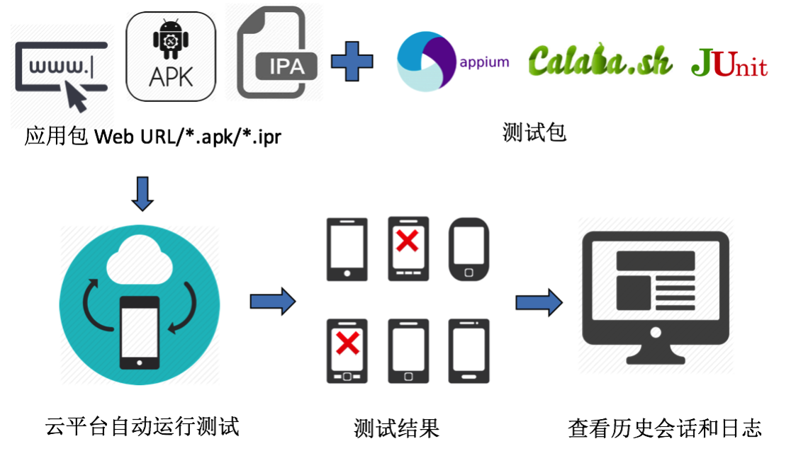
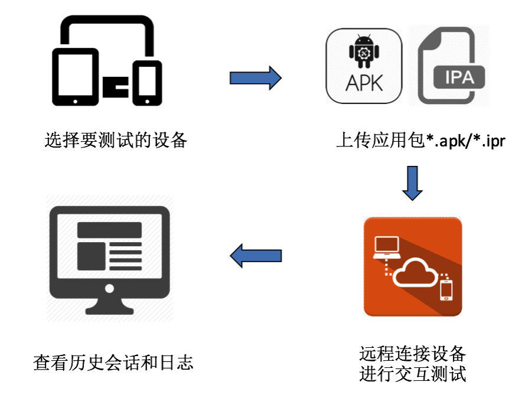
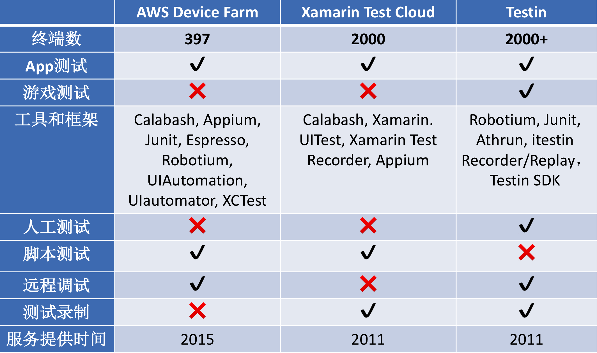
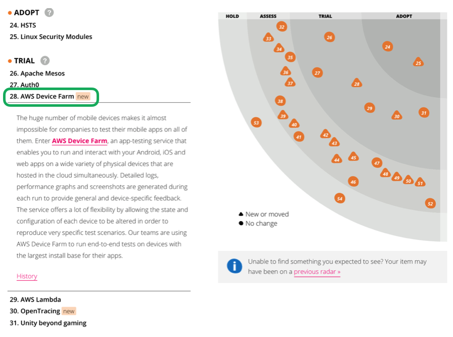

云计算带给测试领域的变革
如今移动设备的更新换代越来越快，跨设备的兼容性测试也变得越来越复杂、耗时。在项目初期，公司往往需要购买大量移动设备来进行测试。如何降低测试成本和减轻测试工作量则成为将要解决的难题。
而云环境的快速发展则给测试领域带来了新的可能性。云计算的本质是一种服务提供模型，通过这种模型可以随时，随地，按需地通过网络访问共享资源池的资源。在日常工作中不论是持续集成还是产品打包部署都可以在云环境上实现，那么在测试领域也同样可以使用云环境来解决上述问题。将软件测试过程迁移到云中，应用云平台提供的计算和存储等资源进行各种测试活动，这是一种新型的软件测试方式，也是云技术的一种新应用。
移动云测试平台
AWS Device Farm 就是这样一种移动云测试平台，可让Android，IOS和Web应用同时运行在各种设备上，并与应用程序进行实时交互，可以通过网络随时、随地、按需的访问AWS提供的移动设备资源进行兼容性测试。目前该平台主要支持两种测试方式，分别是自动化测试和远程访问测试。
- 自动化测试需要上传被测应用包和测试文件包，随后云测试平台会自动运行测试，完成后得出详细测试报告，报告中包含哪些机型未通过测试，也可以查看测试历史会话和日志。

- 远程访问测试需指定待测设备，随后上传应用程序包，等待平台自动分配相应机型后远程连接设备进行交互测试，也可以查看测试历史会话和日志。

目前，市场上的云测试平台有很多，那么AWS作为基础设施云服务提供商的先驱者也同样加入这场云测试平台混战中。然而Xamarin Test Cloud、Testin云测、Sauce Labs等等都已经凭借自己独特的优势拥有了足够的使用群体。

数据采集于2017年4月
与其他的云测试平台相比，AWS Device Farm起步稍晚，目前支持的设备上稍少，但是在脚本测试中支持的语言和框架上发展迅速，当然该平台也是唯一支持测试FireOS设备的云测试平台。运行方式同时支持cli、console、sdk。
收费方式：
- 按需付费: 0.17 USD/设备分钟
- 无限制的测试与访问: 最低 250 USD/设备插槽每月
- 私有设备最低 200 USD/月
- 1000分钟免费

目前情况看来，AWS Device Farm处于技术雷达试验阶段，凭借与其他AWS服务（如AWS CloudTrail）的良好集成和服务使用方式，在云测试平台的市场份额将稳步提升，终将占据一席之地。有需要对移动设备进行兼容性测试的企业可以在风险可控的项目中尝试使用此服务平台。